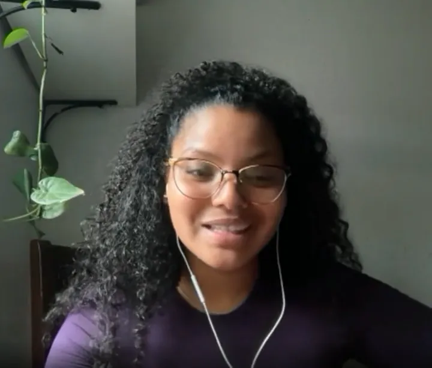
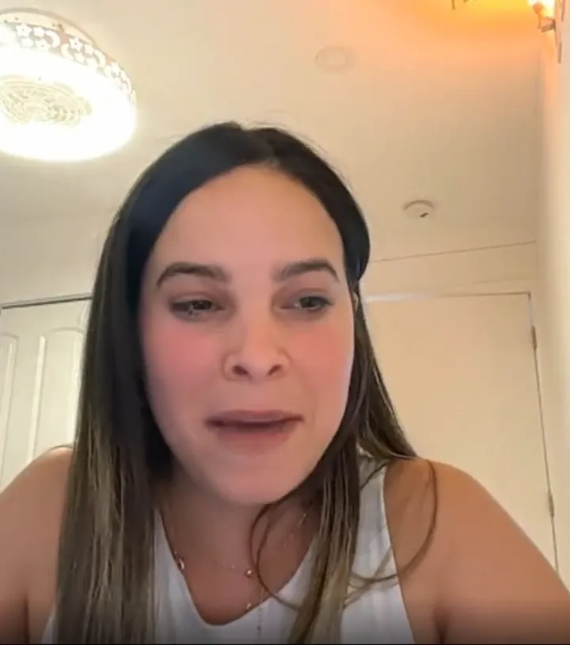
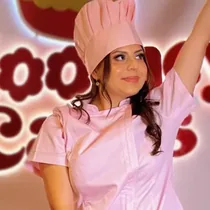

Lo habitual
Un curso grabado
- Compras el acceso y avanzas sola.
- Videos sueltos sin orden ni criterio de avance.
- Nadie revisa lo que haces ni te corrige.
- Terminas con apuntes, no con activos.
- El día que se acaba, se acaba todo.
Admisiones · Crea y Monetiza Campus
Bienvenida a Crea y Monetiza Campus, una formación integral para creadoras de contenido que quieren profesionalizar su talento, construir una marca con dirección y aprender a generar oportunidades reales dentro del mundo digital.
Todo dentro de una misma ruta formativa.
Durante años he creado contenido, trabajado con marcas, probado estrategias, cometido errores y acompañado a cientos de creadoras en su proceso.
Y había algo que seguía viendo una y otra vez: mujeres con muchísimo talento intentando construir una carrera con información suelta.
Un curso para aprender edición. Otro para entender redes. Tutoriales sobre UGC. Videos sobre cómo contactar marcas. Plantillas, prompts, consejos… pero ninguna ruta que conectara todo.
Por eso nació Crea y Monetiza Campus.
Quería construir un lugar donde una creadora pudiera formarse de manera integral y entender cómo pasar de tener talento y muchas ideas a tener estructura, criterio, herramientas y una dirección profesional.
En este video quiero contarte de dónde viene el Campus, qué significa para mí y por qué hemos decidido construirlo de esta manera.
Quería crear el lugar que yo habría necesitado cuando empecé. Pierina Alves
Entre ellas se encuentran

Crear contenido puede convertirse en una profesión. Pero para construir una carrera necesitas mucho más que saber grabar un buen video.
Eso es lo que conecta Crea y Monetiza Campus. Una formación integral donde aprendes, implementas, recibes acompañamiento y construyes los activos que necesitarás para desarrollar tu carrera como creadora.
Lo habitual
El Campus


Construyes una marca personal con una identidad clara, coherente y reconocible.
Aprendes a tomar decisiones detrás de tu contenido y dejar de publicar sin dirección.
Desarrollas criterio para conceptualizar, grabar, comunicar y producir piezas de contenido profesionales.
Trabajas una presencia digital capaz de comunicar quién eres, qué haces y qué valor puedes aportar.
Aprendes a presentar tus servicios, estructurar propuestas, negociar y relacionarte profesionalmente con marcas.
Exploras diferentes caminos para transformar tus habilidades creativas y digitales en oportunidades.
Aquí no trabajamos únicamente tu contenido. Trabajamos la creadora profesional que hay detrás de él.
Tres meses para construir tus bases. Tres meses para llevarlas al mercado con acompañamiento.
Etapa 01
Meses 1–3 · Formación
Comienzas con una ruta clara para entender qué necesitas trabajar, qué debes priorizar y cómo avanzar dentro del Campus.
Durante esta etapa:
Una marca personal que trasciende construye una base sólida.
Etapa 02
Meses 4–6 · Implementación profesional
En esta etapa empiezas a moverte como creadora profesional: mostrar tu trabajo, conectar con marcas, detectar oportunidades y comenzar a posicionarte dentro del mercado.
Trabajarás sobre:
Y durante todo este proceso seguirás contando con acompañamiento para revisar, corregir y optimizar lo que estás implementando.
Cada alumna accede a una formación estructurada por materias, clases, recursos y ejercicios diseñados para profesionalizar cada área de su carrera como creadora.
El plan de estudios es exclusivo para alumnas matriculadas
Materias organizadas para que sepas qué trabajar y en qué orden.
Contenido formativo acompañado de herramientas, ejemplos y materiales de aplicación.
Cada bloque incluye trabajo práctico para llevar lo aprendido a tu propia realidad.
El pensum completo se desbloquea una vez formalizas tu matrícula.
Conoce el proceso de admisión y da el primer paso para acceder a tu formación completa dentro del Campus.
Por eso tu progreso no se mide únicamente por las clases que has visto. Durante tu recorrido tendrás diferentes formas de poner en práctica lo aprendido.
Aquí no vienes a coleccionar clases terminadas. Vienes a construir evidencia de tu evolución.
Lo llamamos:
La Tesis Creativa
Durante tus meses dentro del Campus irás construyendo diferentes partes de tu carrera profesional. Al finalizar tendrás que conectarlas dentro de un proyecto que represente lo que has desarrollado.
Tu proyecto podrá integrar:
No puedes completar tu recorrido únicamente viendo clases. Queremos que cuando llegues al final puedas mirar todo lo que construiste durante estos meses y ver, de forma tangible, tu evolución como creadora.
Aquí queremos que conozcas algunos de los procesos que han formado parte de Crea y Monetiza.
Nueva York, EE. UU.
Me hicieron una primera oferta por video. Pedí más, y cerré un contrato por más del triple, defendiendo mi valor hasta el final.
España
Gracias por inspirarme a dar lo mejor de mí. Por tu tiempo y dedicación, cada día siento que doy un pasito más.

Estados Unidos
Pasamos de un negocio informal, sin menú ni procesos, a tener la agenda completa y una marca que funciona.
Durante tu recorrido tendrás acceso a diferentes espacios en vivo.
Sesiones especiales sobre temas estratégicos, herramientas, tendencias y oportunidades para creadoras.
Espacios para llevar preguntas concretas y resolverlas junto al equipo.
Sesiones destinadas a analizar casos, procesos y aplicaciones reales.
Momentos para conectar con otras alumnas y vivir el Campus más allá de la plataforma.
También necesitas aprender qué hacer con esas habilidades cuando llega el momento de presentarte profesionalmente.
Durante tu recorrido trabajarás en:
Dentro del Campus tendrás acceso a recursos diseñados para acercarte al mercado profesional.
Completar tu recorrido significa haber avanzado por tu plan de estudios, desarrollado tus entregables y presentado tu Proyecto Final. Y queremos celebrar ese momento como corresponde.
Encuentros especiales en España para celebrar juntas el cierre del recorrido.
[Fechas según calendario de cada cohorte]Si formas parte del Campus desde otro país y no puedes asistir presencialmente, podrás vivir también tu cierre de manera online.
Al completar los requisitos del Campus recibirás tu certificado de finalización de Crea y Monetiza Campus.
Capturas de la comunidad del Campus.
Nos importa mucho quién entra al Campus porque queremos construir una comunidad de creadoras que realmente quieran profesionalizarse.
Completa tu información y cuéntanos brevemente sobre ti y tus objetivos.
Tendrás una conversación con nuestro equipo para conocer tu situación actual y hacia dónde quieres avanzar.
Revisamos si el Campus encaja con tus objetivos y si podemos acompañarte en el punto en el que te encuentras.
Si tu perfil encaja con la formación y hay disponibilidad para incorporarte, durante la llamada conocerás todos los detalles de acceso.
Completar el proceso de admisión no garantiza automáticamente una plaza.
Sé de las primeras en enterarte de todo lo que pasa en el Campus.
Oficina de admisiones
Registro prioritario
Formulario de interés
Crea y Monetiza CampusMás mujeres creando la vida que aman.
No necesitas tener una carrera consolidada como creadora para aplicar.
Dentro del proceso de admisión evaluaremos tu punto de partida para entender si el Campus encaja contigo.
No.
La formación trabaja tus habilidades, posicionamiento, estrategia y profesionalización. Tu número de seguidores no determina por sí solo tu capacidad para construir oportunidades.
Sí.
El Campus está diseñado para recibir creadoras desde diferentes países.
La formación y el acompañamiento principal se desarrollan online para que puedas avanzar desde donde estés.
Además, pueden existir experiencias y encuentros presenciales vinculados al Campus.
Tu recorrido principal dentro del Campus tiene una duración de 6 meses.
Sí.
Queremos que apliques lo aprendido durante el proceso, por eso diferentes materias incluyen ejercicios, implementación y entregables.
Sí.
Al finalizar tu recorrido desarrollarás tu Proyecto de Graduación, donde integrarás diferentes elementos que has construido durante tu formación.
Sí.
El acompañamiento y seguimiento forman parte de la experiencia del Campus.
Al completar los requisitos del recorrido recibirás tu título como Creadora Profesional.
Es un espacio de recursos relacionados con marcas, agencias, plataformas y oportunidades que pueden ayudarte durante tu etapa de profesionalización.
El primer paso es completar tu proceso de admisión y agendar una entrevista con nuestro equipo.
Todas las condiciones de incorporación se explican durante la entrevista de admisión una vez que conocemos tu situación y confirmamos que el Campus puede encajar contigo.
Puedes entrar al registro prioritario para recibir directamente las próximas fechas, convocatorias y novedades.